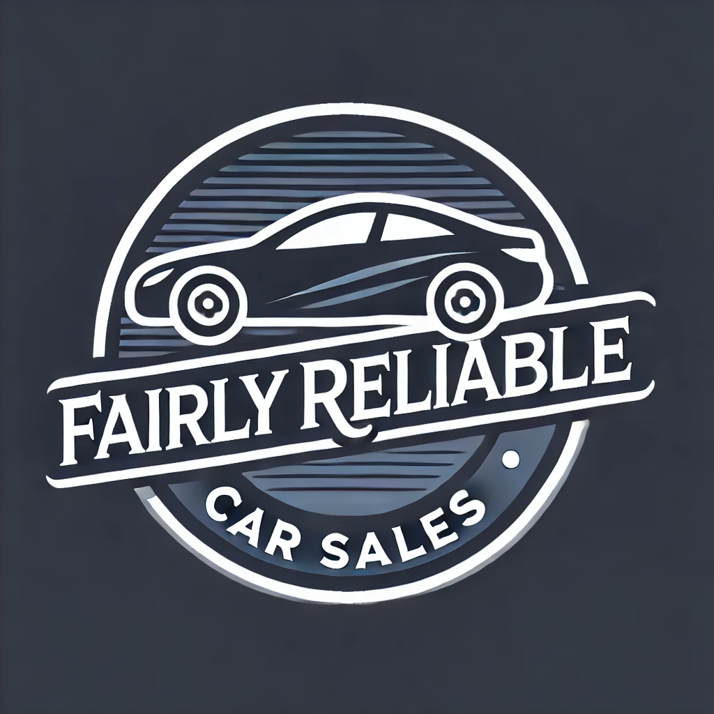

Fairly Reliable Car Sales

Mazda RX-7
2.6 Turbo Coupe 2dr Petrol Manual (237 bhp)
£44,995 | 2002 (02 reg) | Manual | Petrol
Dealer | (01234) 56789
Location: Dungannon, 44 miles
Description
Low mileage and awesome condition bone-stock 2002 Mazda RX7 (FD3S) Type R Bathurst. 2002 is the last and latest model year for RX7s to be produced, and outside of the Spirit Type-R, arguably one of the most wanted.
Overview
Spec: 237 bhp - Huge spec
Mileage: 59,384 miles
Registration: 2002 (02 reg)
Owners: 4
Fuel Type: Petrol
Engine Size: 2.6L
Body Type: Coupe
Transmission: Manual
Doors: 2
Emission Class: Euro 6